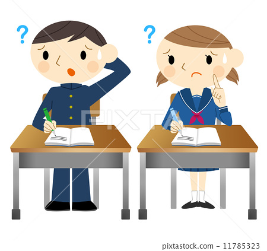
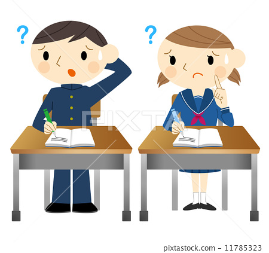

- Academic strategies:
- Use active inquiry involving discussing and experimination and provide the time to work without interuption.Use acceleration and
cirriculum compacting iin strength areas and by teaching creative thinking.
- Special tools. Teachers can offer oral exams, provide a note-taker, and/or allow the child to videotape reports instead of
writing them.Use of technology. A child can be taught to use word-processing programs or an audio recorder instead of writing by hand.
Special teaching techniques. These can include helping a child learn through multisensory experiences and by providing immediate
feedback to strengthen a child's ability to recognize words.
.png)
- Social and Emotional Strategies:
- Tap into students with learning disabilities by using autoobiographies, and inspirational codes. Also teach students or peers how to
respect students with learning disabilities and treat them in a good way;and encourage indivisual counseling to adress chronical behavioral
or family difficulities.
.jpg)
.jpg)
- Behavioral Strategies: Enhance motivation by planning for less desiable tasks to pecede to a preferred one and limit choices.
.jpg) 
